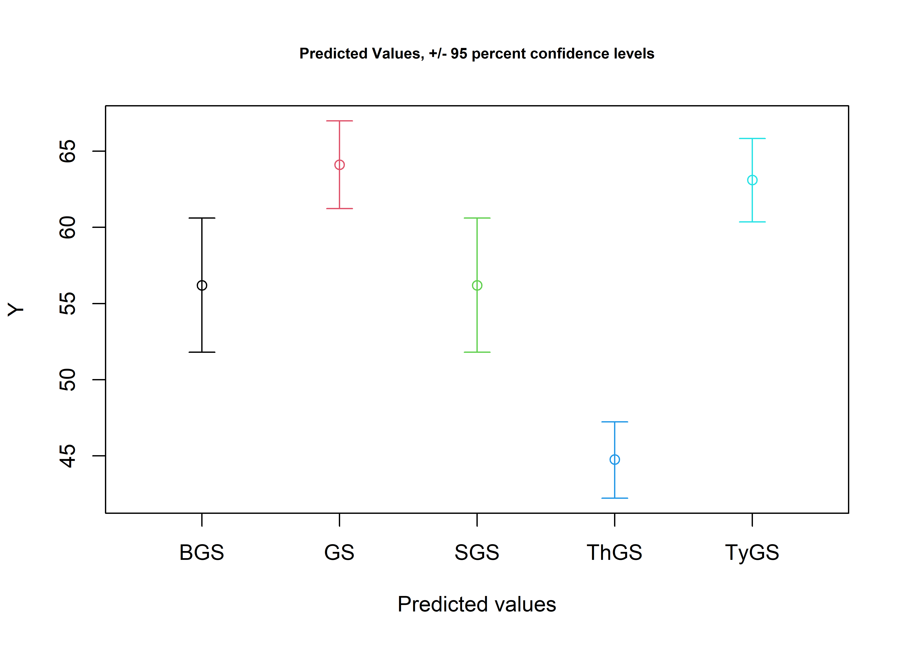
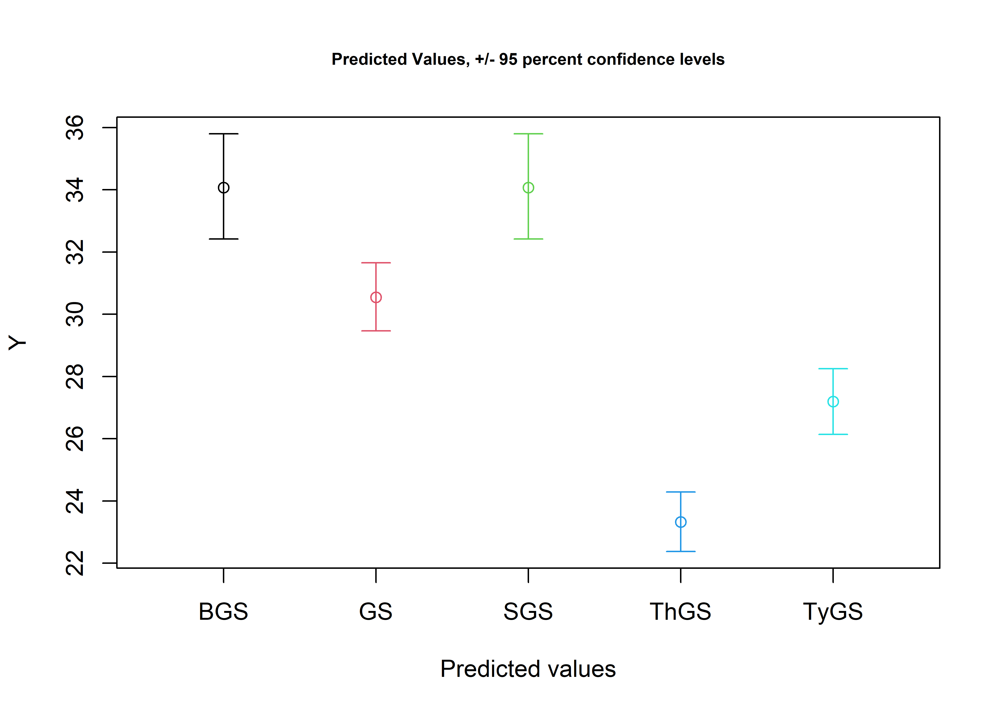

Chapter 4 Jaketown type-varieties
4.1 Reconstructing Gary type-varieties
Reconstructing and expanding the type-varieties of Gary dart points proposed at Poverty Point, Cooper, and Means was necessary, as the type-variety assignments for each specimen were not reported or preserved on the associated paperwork when the collections were curated. Additionally, the collection of Gary dart points at Poverty Point has continued to grow, and this method provides a replicable means of assigning each new specimen to the previously-established type-varieties.
Data for Gary dart points from the Jaketown site have not yet been collected, and in the interim are substituted with those data from the Poverty Point site, which is closer in proximity than the Cooper and Means sites.
# install required analysis packages
#devtools::install_github("tidyverse/tidyverse")
#devtools::install_github("mlcollyer/RRPP")
#devtools::install_github("kassambara/ggpubr")
#devtools::install_github('sinhrks/ggfortify')
# load libraries
library(tidyverse)
library(dplyr)
library(RRPP)
library(ggpubr)
library(ggfortify)
library(cluster)4.2 Gary varieties proposed by Ford, Phillips, and Haag (1955)
The tv0 argument used within this section articulates with five variants of the Gary type—including Gary Stemmed, Typical Gary Stemmed, Broad Gary Stemmed, Thin Gary Stemmed, and Small Gary Stemmed—which were assigned using those morphological criteria advanced by Ford, Phillips, and Haag (1955) at the Jaketown site in west central Mississippi. The Long Gary Stemmed type was omitted from consideration due to the absence of reported metrics.
# Ford, Phillips, and Haag (1955)
fphl<-data.frame(Name=c('var.GaryStemmed','var.TypicalGaryStemmed','var.BroadGaryStemmed','var.ThinGaryStemmed','var.SmallGaryStemmed'),
Length=c(45,45,45,55,35), # in mm
end=c(70,79,70,75,50) # in mm
)
fphlength<-ggplot(fphl,aes(x=Length,xend=end,y=Name,yend=Name,color=Name)) +
geom_segment(size=2) +
scale_color_brewer(palette = "Set1") +
theme(legend.position = "none")
fphw<-data.frame(Name=c('var.GaryStemmed','var.TypicalGaryStemmed','var.BroadGaryStemmed','var.ThinGaryStemmed','var.SmallGaryStemmed'),
Width=c(22,22,32,30,20), # in mm
end=c(31,31,48,36,30) # in mm
)
fphwidth<-ggplot(fphw,aes(x=Width,xend=end,y=Name,yend=Name,color=Name)) +
geom_segment(size=2) +
scale_color_brewer(palette = "Set1") +
theme(legend.position = "none")
# render figure
fphfig<-ggarrange(fphlength,fphwidth,
labels = c("a","b"),
ncol = 1, nrow = 2)
fphfigFigure 4.1: Gantt charts illustrating the range of linear measurements for each type-variety reported by Ford, Phillips, and Haag (1955).
4.3 Assign Gary type-varieties proposed by Ford, Phillips, and Haag (1955)
Ford, Phillips, and Haag (1955) used a series of metrics to assign Gary varieties at the Jaketown site. The approach empoyed here enlists the full range of reported metrics, and applies those to each of the points. Any points that do not articulate with one of the three criteria were assigned as Gary no variety (Gnv), and, for the purpose of this undertaking, are considered to be Gary dart points with no type-variety assignment. Due to the degree of overlap in the ranges associated with the Gary type-varieties advanced by Ford, Phillips, and Haag (1956), it is expected that Gary Stemmed will fall out due to overlap in length with Broad Gary Stemmed, and overlap in width with Typical Gary Stemmed.
4.3.1 Subset the sample
During code development, the Poverty Point sample was used in place of the Jaketown sample as the requisite permissions and access were sought to access and scan those collections. Due to the COVID-19 pandemic, we were unable to collect data from the Jaketown sample; however, since those type-varieties presented at Poverty Point are representative of the logical maturation of these type-varieties, the Poverty Point specimens were classified using those metrics associated with the Gary dart point type-varieties that were advanced at Jaketown.
# subset poverty point data
jmx<-subset(data,Site=="Pov Pt",select=maxl:maxstw)
# assign varieties based upon reported metrics in Ford, Phillips, and Haag [1954]
fphlcheck1 <- jmx$maxl >= 45 & jmx$maxl <= 70
fphlcheck2 <- jmx$maxl >= 45 & jmx$maxl <= 79
fphlcheck3 <- jmx$maxl >= 45 & jmx$maxl <= 70
fphlcheck4 <- jmx$maxl >= 55 & jmx$maxl <= 75
fphlcheck5 <- jmx$maxl >= 35 & jmx$maxl <= 50
fphwcheck1 <- jmx$maxw >= 22 & jmx$maxw <= 31
fphwcheck2 <- jmx$maxw >= 22 & jmx$maxw <= 31
fphwcheck3 <- jmx$maxw >= 32 & jmx$maxw <= 48
fphwcheck4 <- jmx$maxw >= 30 & jmx$maxw <= 36
fphwcheck5 <- jmx$maxw >= 20 & jmx$maxw <= 30
jmx$tv0 <- "Gnv" # = Gary points (no variety)
jmx$tv0 <- ifelse(fphlcheck1 & fphwcheck1, "GS", jmx$tv0)
jmx$tv0 <- ifelse(fphlcheck2 & fphwcheck2, "TyGS", jmx$tv0)
jmx$tv0 <- ifelse(fphlcheck3 & fphwcheck3, "BGS", jmx$tv0)
jmx$tv0 <- ifelse(fphlcheck4 & fphwcheck4, "ThGS", jmx$tv0)
jmx$tv0 <- ifelse(fphlcheck5 & fphwcheck5, "SGS", jmx$tv0)
tv0<-jmx$tv0
tv0## [1] "Gnv" "TyGS" "ThGS" "ThGS" "TyGS" "Gnv" "TyGS" "ThGS" "TyGS" "ThGS" "ThGS" "ThGS" "ThGS" "ThGS" "ThGS" "TyGS" "TyGS" "TyGS" "ThGS"
## [20] "TyGS" "TyGS" "TyGS" "TyGS" "ThGS" "TyGS" "TyGS" "ThGS" "TyGS" "TyGS" "TyGS" "ThGS" "TyGS" "TyGS" "TyGS" "BGS" "TyGS" "TyGS" "TyGS"
## [39] "TyGS" "TyGS" "TyGS" "TyGS" "TyGS" "SGS" "SGS" "SGS" "BGS" "SGS" "Gnv" "SGS" "SGS" "SGS" "BGS" "SGS" "Gnv" "SGS" "SGS"
## [58] "SGS" "Gnv" "SGS" "SGS" "SGS" "SGS" "SGS" "Gnv" "BGS" "TyGS" "ThGS" "Gnv" "Gnv" "TyGS" "SGS" "Gnv" "SGS" "Gnv" "TyGS"
## [77] "Gnv" "ThGS" "TyGS" "ThGS" "ThGS" "TyGS" "Gnv" "TyGS" "SGS" "TyGS" "Gnv" "ThGS" "ThGS" "ThGS" "TyGS" "TyGS" "TyGS" "SGS" "ThGS"
## [96] "SGS" "TyGS" "ThGS" "SGS" "ThGS" "TyGS" "ThGS" "ThGS" "SGS" "TyGS" "TyGS" "TyGS" "TyGS" "SGS" "TyGS" "Gnv" "SGS" "TyGS" "SGS"
## [115] "SGS" "SGS" "Gnv" "ThGS" "TyGS" "BGS" "Gnv" "Gnv" "ThGS" "ThGS" "TyGS" "TyGS" "BGS" "Gnv" "SGS" "TyGS" "TyGS" "SGS" "TyGS"
## [134] "SGS" "SGS" "Gnv" "Gnv" "SGS" "TyGS" "Gnv" "BGS" "TyGS" "Gnv" "Gnv" "SGS" "SGS" "SGS" "Gnv" "TyGS" "TyGS" "TyGS" "Gnv"
## [153] "SGS" "SGS" "SGS" "SGS" "Gnv" "SGS" "SGS" "TyGS" "TyGS" "Gnv" "Gnv" "Gnv" "TyGS" "SGS" "Gnv" "Gnv" "ThGS" "TyGS" "TyGS"
## [172] "SGS" "SGS" "TyGS" "TyGS" "ThGS" "SGS" "TyGS" "TyGS" "SGS" "TyGS" "SGS" "TyGS" "SGS" "Gnv" "Gnv" "TyGS" "SGS" "TyGS" "SGS"
## [191] "Gnv" "Gnv" "BGS" "ThGS" "ThGS" "TyGS" "ThGS" "TyGS" "ThGS" "TyGS" "ThGS" "Gnv" "BGS" "TyGS" "TyGS" "Gnv" "SGS" "TyGS" "SGS"
## [210] "ThGS" "SGS" "SGS" "TyGS" "TyGS" "BGS" "TyGS" "Gnv" "Gnv" "TyGS" "ThGS" "Gnv" "TyGS" "TyGS" "BGS" "Gnv" "TyGS" "SGS" "SGS"
## [229] "Gnv" "Gnv" "SGS" "Gnv" "Gnv" "Gnv" "Gnv" "Gnv" "Gnv" "ThGS" "Gnv" "Gnv" "TyGS" "SGS" "SGS" "SGS" "SGS" "Gnv" "TyGS"
## [248] "ThGS" "ThGS" "TyGS" "TyGS" "TyGS" "SGS" "BGS" "ThGS" "Gnv" "TyGS" "TyGS" "Gnv" "TyGS" "SGS" "ThGS" "SGS" "SGS" "Gnv" "Gnv"
## [267] "TyGS" "TyGS" "Gnv" "TyGS" "BGS" "TyGS" "ThGS" "ThGS" "TyGS" "TyGS" "TyGS" "Gnv" "Gnv" "TyGS" "Gnv" "TyGS" "TyGS" "Gnv" "TyGS"
## [286] "TyGS" "TyGS" "ThGS" "ThGS" "ThGS" "Gnv" "ThGS" "TyGS" "ThGS" "SGS" "SGS" "ThGS" "TyGS" "Gnv" "ThGS" "ThGS" "ThGS" "SGS" "SGS"
## [305] "SGS" "Gnv" "SGS" "ThGS" "ThGS" "Gnv" "TyGS" "TyGS" "ThGS" "SGS" "TyGS" "ThGS" "ThGS" "SGS" "SGS" "BGS" "TyGS" "SGS" "SGS"
## [324] "TyGS" "Gnv" "SGS" "ThGS" "TyGS" "TyGS" "ThGS" "SGS" "Gnv" "Gnv" "TyGS" "SGS" "TyGS" "TyGS" "ThGS" "TyGS" "Gnv" "ThGS" "ThGS"
## [343] "Gnv" "SGS" "TyGS" "TyGS" "SGS" "SGS" "TyGS" "SGS" "SGS" "SGS" "TyGS" "TyGS" "SGS" "BGS"4.4 Boxplots for site by Ford, Phillips, and Haag’s (1955) Gary type-varieties
# boxplot of maximum length
jmaxl<-ggplot(jmx,aes(x=tv0,y=maxl,color=tv0)) +
geom_boxplot() +
geom_dotplot(binaxis = 'y',stackdir = 'center',dotsize = 0.3) +
scale_color_brewer(palette = "Set1") +
theme(legend.position = "none")
# boxplot of maximum width
jmaxw<-ggplot(jmx,aes(x=tv0,y=maxw,color=tv0)) +
geom_boxplot() +
geom_dotplot(binaxis = 'y',stackdir = 'center',dotsize = 0.3)+
scale_color_brewer(palette = "Set1") +
theme(legend.position = "none")
# boxplot of maximum thickness
jmaxth<-ggplot(jmx,aes(x=tv0,y=maxth,color=tv0)) +
geom_boxplot() +
geom_dotplot(binaxis = 'y',stackdir = 'center',dotsize = 0.3)+
scale_color_brewer(palette = "Set1") +
theme(legend.position = "none")
# boxplot of maximum stem length
jmaxstl<-ggplot(jmx,aes(x=tv0,y=maxstl,color=tv0)) +
geom_boxplot() +
geom_dotplot(binaxis = 'y',stackdir = 'center',dotsize = 0.3)+
scale_color_brewer(palette = "Set1") +
theme(legend.position = "none")
# boxplot of maximum thickness
jmaxstw<-ggplot(jmx,aes(x=tv0,y=maxstw,color=tv0)) +
geom_boxplot() +
geom_dotplot(binaxis = 'y',stackdir = 'center',dotsize = 0.3)+
scale_color_brewer(palette = "Set1") +
theme(legend.position = "none")
# render figure
jfigure<-ggarrange(jmaxl,jmaxw,jmaxth,jmaxstl,jmaxstw,
labels = c("a","b","c","d","e"),
ncol = 3, nrow = 2)## `stat_bindot()` using `bins = 30`. Pick better value with `binwidth`.
## `stat_bindot()` using `bins = 30`. Pick better value with `binwidth`.
## `stat_bindot()` using `bins = 30`. Pick better value with `binwidth`.
## `stat_bindot()` using `bins = 30`. Pick better value with `binwidth`.
## `stat_bindot()` using `bins = 30`. Pick better value with `binwidth`.
Figure 4.2: Boxplots for maximum a, length; b, width; c, thickness; d, stem length; and e, stem width for Gary dart points assigned to the Ford, Phillips, and Haag type-varieties.
4.5 Density plots for variables by type-varieties
4.5.1 Density plot for maximum length by tv0
# define variables in jaketown subset
j.maxl<-jmx$maxl
j.maxw<-jmx$maxw
j.maxth<-jmx$maxth
j.maxstl<-jmx$maxstl
j.maxstw<-jmx$maxstw
j.tv0<-jmx$tv0
# density plot of maxl by tv0
ggplot(jmx, aes(x=j.maxl, fill = j.tv0)) +
geom_density(alpha = .4) +
scale_color_brewer(palette = "Set1") +
xlim(0,140) #full range of variation included in the linear measurements associated with type-varieties
4.5.2 Density plot for maximum width by tv0
# density plot of maxw by tv0
ggplot(jmx, aes(x=j.maxw, fill = j.tv0)) +
geom_density(alpha = .4) +
scale_color_brewer(palette = "Set1") +
xlim(5,45)## Warning: Removed 1 rows containing non-finite values (stat_density).
4.5.3 Density plot for maximum thickness by tv0
# density plot of maxth by tv0
ggplot(jmx, aes(x=j.maxth, fill = j.tv0)) +
geom_density(alpha = .4) +
scale_color_brewer(palette = "Set1") +
xlim(0,25)

4.6 Principal Components Analysis for Ford, Phillips, and Haag’s (1955) type-varieties at all sites
#pca
df<-jmx[c(1:5)]
tv0pca<-autoplot(prcomp(df),data = jmx, colour = 'tv0',
loadings = TRUE, loadings.colour = 'blue',
loadings.label = TRUE,loadings.label.size = 3,
frame = TRUE)
#render figure
tv0pca
Figure 4.3: PCA by Gary type-varieties reported by Ford, Phillips, and Haag (1955).
4.7 Analyses of Variance (ANOVA) for linear variables ~ type-varieties
4.7.1 Maximum length ~ type-variety
# anova = maximum length ~ tv1
t0ml<-lm.rrpp(j.maxl ~ j.tv0, SS.type = "I",data = jmx,iter = 9999,print.progress = FALSE)
anova(t0ml)##
## Analysis of Variance, using Residual Randomization
## Permutation procedure: Randomization of null model residuals
## Number of permutations: 10000
## Estimation method: Ordinary Least Squares
## Sums of Squares and Cross-products: Type I
## Effect sizes (Z) based on F distributions
##
## Df SS MS Rsq F Z Pr(>F)
## j.tv0 4 19290 4822.6 0.32034 41.359 4.9486 1e-04 ***
## Residuals 351 40927 116.6 0.67966
## Total 355 60217
## ---
## Signif. codes: 0 '***' 0.001 '**' 0.01 '*' 0.05 '.' 0.1 ' ' 1
##
## Call: lm.rrpp(f1 = j.maxl ~ j.tv0, iter = 9999, SS.type = "I", data = jmx, print.progress = FALSE)# visualise model predictions for maximum length ~ type-variety
j.tvDF<-data.frame(j.tv0 = c("GS","TyGS","BGS","ThGS","SGS"))
rownames(j.tvDF)<-c("GS","TyGS","BGS","ThGS","SGS")
jPreds<-predict(t0ml,j.tvDF)
jPreds##
## Linear Model fit with lm.rrpp
##
## Number of predictions: 5
## Confidence level: 95 %
## Number of bootstrap permutations: 10000
##
## Predicted values:
##
## [,1]
## GS 56.19772
## TyGS 64.11792
## BGS 56.19772
## ThGS 44.76164
## SGS 63.10728
##
##
## 95 % Lower confidence limits:
##
## [,1]
## GS 51.79922
## TyGS 61.23693
## BGS 51.79922
## ThGS 42.21871
## SGS 60.35460
##
##
## 95 % Upper confidence limits:
##
## [,1]
## GS 60.60574
## TyGS 66.99542
## BGS 60.60574
## ThGS 47.23763
## SGS 65.82726
# pairwise comparison of LS means = which sites differ?
j.ml<-pairwise(t0ml, groups = jmx$tv0)
summary(j.ml, confidence = 0.95, test.type = "dist")##
## Pairwise comparisons
##
## Groups: BGS Gnv SGS ThGS TyGS
##
## RRPP: 10000 permutations
##
## LS means:
## Vectors hidden (use show.vectors = TRUE to view)
##
## Pairwise distances between means, plus statistics
## d UCL (95%) Z Pr > d
## BGS:Gnv 6.908905 7.214486 1.782473135 0.0597
## BGS:SGS 11.419333 7.138974 3.894589599 0.0019
## BGS:ThGS 7.913048 7.343784 2.204431814 0.0345
## BGS:TyGS 2.825680 7.014869 -0.009101267 0.4328
## Gnv:SGS 18.328238 4.063987 13.208558512 0.0001
## Gnv:ThGS 1.004143 4.381271 -0.580802999 0.6546
## Gnv:TyGS 4.083224 3.779905 2.135446471 0.0353
## SGS:ThGS 19.332381 4.177994 13.629673039 0.0001
## SGS:TyGS 14.245014 3.598370 11.507048342 0.0001
## ThGS:TyGS 5.087367 3.998237 2.851283611 0.0119# pairwise distances between variances = standardization?
summary(j.ml, confidence = 0.95, test.type = "var")##
## Pairwise comparisons
##
## Groups: BGS Gnv SGS ThGS TyGS
##
## RRPP: 10000 permutations
##
##
## Observed variances by group
##
## BGS Gnv SGS ThGS TyGS
## 54.71670 455.14304 12.30057 31.65536 42.82517
##
## Pairwise distances between variances, plus statistics
## d UCL (95%) Z Pr > d
## BGS:Gnv 400.42634 127.98976 8.7106613 0.0001
## BGS:SGS 42.41613 122.90947 -0.2324641 0.5145
## BGS:ThGS 23.06134 126.69815 -0.7403346 0.7314
## BGS:TyGS 11.89153 120.08026 -1.0093496 0.8546
## Gnv:SGS 442.84247 72.19870 18.3061230 0.0001
## Gnv:ThGS 423.48768 78.59028 16.0314886 0.0001
## Gnv:TyGS 412.31787 67.52133 18.2233304 0.0001
## SGS:ThGS 19.35479 74.64886 -0.4952932 0.6198
## SGS:TyGS 30.52460 63.96003 0.2228039 0.3535
## ThGS:TyGS 11.16981 70.73379 -0.8008018 0.75054.7.2 Maximum width ~ type-variety
# anova = maximum width ~ tv1
t0mw<-lm.rrpp(j.maxw ~ j.tv0, SS.type = "I",data = jmx,iter = 9999,print.progress = FALSE)
anova(t0mw)##
## Analysis of Variance, using Residual Randomization
## Permutation procedure: Randomization of null model residuals
## Number of permutations: 10000
## Estimation method: Ordinary Least Squares
## Sums of Squares and Cross-products: Type I
## Effect sizes (Z) based on F distributions
##
## Df SS MS Rsq F Z Pr(>F)
## j.tv0 4 3026.3 756.58 0.33304 43.817 5.0081 1e-04 ***
## Residuals 351 6060.6 17.27 0.66696
## Total 355 9086.9
## ---
## Signif. codes: 0 '***' 0.001 '**' 0.01 '*' 0.05 '.' 0.1 ' ' 1
##
## Call: lm.rrpp(f1 = j.maxw ~ j.tv0, iter = 9999, SS.type = "I", data = jmx, print.progress = FALSE)# visualise model predictions for maximum width ~ type-variety
j.tvDF<-data.frame(j.tv0 = c("GS","TyGS","BGS","ThGS","SGS"))
rownames(j.tvDF)<-c("GS","TyGS","BGS","ThGS","SGS")
jPreds<-predict(t0mw,j.tvDF)
jPreds##
## Linear Model fit with lm.rrpp
##
## Number of predictions: 5
## Confidence level: 95 %
## Number of bootstrap permutations: 10000
##
## Predicted values:
##
## [,1]
## GS 34.07261
## TyGS 30.54750
## BGS 34.07261
## ThGS 23.32636
## SGS 27.19860
##
##
## 95 % Lower confidence limits:
##
## [,1]
## GS 32.41985
## TyGS 29.46952
## BGS 32.41985
## ThGS 22.37523
## SGS 26.13678
##
##
## 95 % Upper confidence limits:
##
## [,1]
## GS 35.80168
## TyGS 31.65197
## BGS 35.80168
## ThGS 24.29293
## SGS 28.25392
# pairwise comparison of LS means = which sites differ?
j.mw<-pairwise(t0mw, groups = jmx$tv0)
summary(j.mw, confidence = 0.95, test.type = "dist")##
## Pairwise comparisons
##
## Groups: BGS Gnv SGS ThGS TyGS
##
## RRPP: 10000 permutations
##
## LS means:
## Vectors hidden (use show.vectors = TRUE to view)
##
## Pairwise distances between means, plus statistics
## d UCL (95%) Z Pr > d
## BGS:Gnv 6.882762 2.837729 6.592279 0.0001
## BGS:SGS 10.751310 2.747902 11.314483 0.0001
## BGS:ThGS 3.527079 2.812398 2.728300 0.0130
## BGS:TyGS 8.934424 2.694829 9.380476 0.0001
## Gnv:SGS 3.868548 1.584093 6.604897 0.0001
## Gnv:ThGS 3.355683 1.720479 5.011485 0.0001
## Gnv:TyGS 2.051662 1.499689 3.108727 0.0073
## SGS:ThGS 7.224231 1.640726 12.927142 0.0001
## SGS:TyGS 1.816886 1.397445 2.904567 0.0107
## ThGS:TyGS 5.407345 1.526170 10.033394 0.0001# pairwise distances between variances = standardization?
summary(j.mw, confidence = 0.95, test.type = "var")##
## Pairwise comparisons
##
## Groups: BGS Gnv SGS ThGS TyGS
##
## RRPP: 10000 permutations
##
##
## Observed variances by group
##
## BGS Gnv SGS ThGS TyGS
## 12.170812 66.315102 6.010307 2.580132 4.550106
##
## Pairwise distances between variances, plus statistics
## d UCL (95%) Z Pr > d
## BGS:Gnv 54.144290 20.92185 6.8365046 0.0003
## BGS:SGS 6.160505 20.51743 -0.3797283 0.5822
## BGS:ThGS 9.590680 21.15572 0.1212481 0.3834
## BGS:TyGS 7.620706 19.79964 -0.1295988 0.4885
## Gnv:SGS 60.304795 11.97344 14.8922061 0.0001
## Gnv:ThGS 63.734970 13.13008 14.3767573 0.0001
## Gnv:TyGS 61.764996 11.16112 16.4710207 0.0001
## SGS:ThGS 3.430175 12.45480 -0.4298322 0.5857
## SGS:TyGS 1.460201 10.59572 -0.8859192 0.7872
## ThGS:TyGS 1.969974 11.73927 -0.8005648 0.75534.7.3 Maximum thickness ~ type-variety
# anova = maximum thickness ~ tv1
t0mth<-lm.rrpp(j.maxth ~ j.tv0, SS.type = "I",data = jmx,iter = 9999,print.progress = FALSE)
anova(t0mth)##
## Analysis of Variance, using Residual Randomization
## Permutation procedure: Randomization of null model residuals
## Number of permutations: 10000
## Estimation method: Ordinary Least Squares
## Sums of Squares and Cross-products: Type I
## Effect sizes (Z) based on F distributions
##
## Df SS MS Rsq F Z Pr(>F)
## j.tv0 4 84.89 21.2225 0.05342 4.9517 2.3148 0.001 **
## Residuals 351 1504.35 4.2859 0.94658
## Total 355 1589.24
## ---
## Signif. codes: 0 '***' 0.001 '**' 0.01 '*' 0.05 '.' 0.1 ' ' 1
##
## Call: lm.rrpp(f1 = j.maxth ~ j.tv0, iter = 9999, SS.type = "I", data = jmx, print.progress = FALSE)# visualise model predictions for maximum thickness ~ type-variety
j.tvDF<-data.frame(j.tv0 = c("GS","TyGS","BGS","ThGS","SGS"))
rownames(j.tvDF)<-c("GS","TyGS","BGS","ThGS","SGS")
jPreds<-predict(t0mth,j.tvDF)
jPreds##
## Linear Model fit with lm.rrpp
##
## Number of predictions: 5
## Confidence level: 95 %
## Number of bootstrap permutations: 10000
##
## Predicted values:
##
## [,1]
## GS 10.663507
## TyGS 10.867774
## BGS 10.663507
## ThGS 9.432958
## SGS 10.321366
##
##
## 95 % Lower confidence limits:
##
## [,1]
## GS 9.851738
## TyGS 10.326188
## BGS 9.851738
## ThGS 8.951399
## SGS 9.804554
##
##
## 95 % Upper confidence limits:
##
## [,1]
## GS 11.555229
## TyGS 11.437216
## BGS 11.555229
## ThGS 9.915304
## SGS 10.862887
# pairwise comparison of LS means = which sites differ?
j.mth<-pairwise(t0mth, groups = jmx$tv0)
summary(j.mth, confidence = 0.95, test.type = "dist")##
## Pairwise comparisons
##
## Groups: BGS Gnv SGS ThGS TyGS
##
## RRPP: 10000 permutations
##
## LS means:
## Vectors hidden (use show.vectors = TRUE to view)
##
## Pairwise distances between means, plus statistics
## d UCL (95%) Z Pr > d
## BGS:Gnv 0.34228571 1.1840500 -0.3812994 0.5686
## BGS:SGS 1.23239080 1.1742379 2.0891483 0.0401
## BGS:ThGS 0.20139683 1.1943270 -0.7719057 0.7397
## BGS:TyGS 0.35647934 1.1332645 -0.3072950 0.5398
## Gnv:SGS 0.89010509 0.6734429 2.9736021 0.0105
## Gnv:ThGS 0.54368254 0.7049151 1.1662244 0.1359
## Gnv:TyGS 0.01419362 0.6188537 -1.2560437 0.9635
## SGS:ThGS 1.43378763 0.6809453 5.5049628 0.0002
## SGS:TyGS 0.87591147 0.5793380 3.5569879 0.0039
## ThGS:TyGS 0.55787616 0.6342675 1.5136128 0.0874# pairwise distances between variances = standardization?
summary(j.mth, confidence = 0.95, test.type = "var")##
## Pairwise comparisons
##
## Groups: BGS Gnv SGS ThGS TyGS
##
## RRPP: 10000 permutations
##
##
## Observed variances by group
##
## BGS Gnv SGS ThGS TyGS
## 5.698824 5.594223 3.521335 4.695872 3.513040
##
## Pairwise distances between variances, plus statistics
## d UCL (95%) Z Pr > d
## BGS:Gnv 0.104601224 4.904627 -1.11910922 0.9651
## BGS:SGS 2.177488658 4.886107 0.21170210 0.3187
## BGS:ThGS 1.002951538 5.018295 -0.56884969 0.6648
## BGS:TyGS 2.185783866 4.720676 0.25224475 0.3042
## Gnv:SGS 2.072887434 2.677425 1.15205667 0.1374
## Gnv:ThGS 0.898350314 2.941333 -0.35111656 0.5614
## Gnv:TyGS 2.081182642 2.515523 1.35012424 0.1052
## SGS:ThGS 1.174537120 2.776295 0.04022782 0.4107
## SGS:TyGS 0.008295208 2.348919 -1.34798821 0.9950
## ThGS:TyGS 1.182832328 2.592889 0.14881981 0.38364.7.4 Maximum stem length ~ type-variety
# anova = maximum stem length ~ tv1
t0mstl<-lm.rrpp(j.maxstl ~ j.tv0, SS.type = "I",data = jmx,iter = 9999,print.progress = FALSE)
anova(t0mstl)##
## Analysis of Variance, using Residual Randomization
## Permutation procedure: Randomization of null model residuals
## Number of permutations: 10000
## Estimation method: Ordinary Least Squares
## Sums of Squares and Cross-products: Type I
## Effect sizes (Z) based on F distributions
##
## Df SS MS Rsq F Z Pr(>F)
## j.tv0 4 247.5 61.870 0.04885 4.5072 2.2081 0.0012 **
## Residuals 351 4818.2 13.727 0.95115
## Total 355 5065.7
## ---
## Signif. codes: 0 '***' 0.001 '**' 0.01 '*' 0.05 '.' 0.1 ' ' 1
##
## Call: lm.rrpp(f1 = j.maxstl ~ j.tv0, iter = 9999, SS.type = "I", data = jmx, print.progress = FALSE)# visualise model predictions for maximum stem length ~ type-variety
j.tvDF<-data.frame(j.tv0 = c("GS","TyGS","BGS","ThGS","SGS"))
rownames(j.tvDF)<-c("GS","TyGS","BGS","ThGS","SGS")
jPreds<-predict(t0mstl,j.tvDF)
jPreds##
## Linear Model fit with lm.rrpp
##
## Number of predictions: 5
## Confidence level: 95 %
## Number of bootstrap permutations: 10000
##
## Predicted values:
##
## [,1]
## GS 16.21253
## TyGS 15.74033
## BGS 16.21253
## ThGS 14.29325
## SGS 16.50766
##
##
## 95 % Lower confidence limits:
##
## [,1]
## GS 14.77318
## TyGS 14.78679
## BGS 14.77318
## ThGS 13.42684
## SGS 15.55667
##
##
## 95 % Upper confidence limits:
##
## [,1]
## GS 17.71381
## TyGS 16.72816
## BGS 17.71381
## ThGS 15.16634
## SGS 17.44394
# pairwise comparison of LS means = which sites differ?
j.mstl<-pairwise(t0mstl, groups = jmx$tv0)
summary(j.mstl, confidence = 0.95, test.type = "dist")##
## Pairwise comparisons
##
## Groups: BGS Gnv SGS ThGS TyGS
##
## RRPP: 10000 permutations
##
## LS means:
## Vectors hidden (use show.vectors = TRUE to view)
##
## Pairwise distances between means, plus statistics
## d UCL (95%) Z Pr > d
## BGS:Gnv 0.2961905 2.092162 -0.8588279 0.7833
## BGS:SGS 1.9197931 2.041501 1.7161999 0.0659
## BGS:ThGS 0.4791746 2.128579 -0.5767813 0.6522
## BGS:TyGS 0.0544022 1.999867 -1.2141509 0.9561
## Gnv:SGS 2.2159836 1.188499 4.7400325 0.0005
## Gnv:ThGS 0.7753651 1.276674 0.6355189 0.2362
## Gnv:TyGS 0.3505927 1.097664 -0.2963921 0.5380
## SGS:ThGS 1.4406185 1.206131 2.5511105 0.0194
## SGS:TyGS 1.8653909 1.038619 4.5335894 0.0006
## ThGS:TyGS 0.4247724 1.151267 -0.1290262 0.4712# pairwise distances between variances = standardization?
summary(j.mstl, confidence = 0.95, test.type = "var")##
## Pairwise comparisons
##
## Groups: BGS Gnv SGS ThGS TyGS
##
## RRPP: 10000 permutations
##
##
## Observed variances by group
##
## BGS Gnv SGS ThGS TyGS
## 9.280073 25.431679 10.505775 7.748223 12.368841
##
## Pairwise distances between variances, plus statistics
## d UCL (95%) Z Pr > d
## BGS:Gnv 16.151606 12.608348 2.5588672 0.0306
## BGS:SGS 1.225702 12.471369 -0.8218775 0.8283
## BGS:ThGS 1.531850 13.025161 -0.7630465 0.7851
## BGS:TyGS 3.088768 12.022722 -0.3699217 0.5764
## Gnv:SGS 14.925904 7.253572 5.4084429 0.0001
## Gnv:ThGS 17.683456 7.791558 6.0003294 0.0001
## Gnv:TyGS 13.062838 6.700559 4.9953717 0.0002
## SGS:ThGS 2.757552 7.481601 -0.1232048 0.4705
## SGS:TyGS 1.863066 6.190038 -0.3992955 0.5815
## ThGS:TyGS 4.620618 7.200199 0.7811228 0.20384.7.5 Maximum stem width ~ type-variety
# anova = maximum stem width ~ tv1
t0mstw<-lm.rrpp(j.maxstw ~ j.tv0, SS.type = "I",data = jmx,iter = 9999,print.progress = FALSE)
anova(t0mstw)##
## Analysis of Variance, using Residual Randomization
## Permutation procedure: Randomization of null model residuals
## Number of permutations: 10000
## Estimation method: Ordinary Least Squares
## Sums of Squares and Cross-products: Type I
## Effect sizes (Z) based on F distributions
##
## Df SS MS Rsq F Z Pr(>F)
## j.tv0 4 442.7 110.676 0.08555 8.2098 2.9404 1e-04 ***
## Residuals 351 4731.8 13.481 0.91445
## Total 355 5174.5
## ---
## Signif. codes: 0 '***' 0.001 '**' 0.01 '*' 0.05 '.' 0.1 ' ' 1
##
## Call: lm.rrpp(f1 = j.maxstw ~ j.tv0, iter = 9999, SS.type = "I", data = jmx, print.progress = FALSE)# visualise model predictions for maximum stem width ~ type-variety
j.tvDF<-data.frame(j.tv0 = c("GS","TyGS","BGS","ThGS","SGS"))
rownames(j.tvDF)<-c("GS","TyGS","BGS","ThGS","SGS")
jPreds<-predict(t0mstw,j.tvDF)
jPreds##
## Linear Model fit with lm.rrpp
##
## Number of predictions: 5
## Confidence level: 95 %
## Number of bootstrap permutations: 10000
##
## Predicted values:
##
## [,1]
## GS 21.48051
## TyGS 21.56590
## BGS 21.48051
## ThGS 18.57992
## SGS 20.94332
##
##
## 95 % Lower confidence limits:
##
## [,1]
## GS 20.04739
## TyGS 20.57728
## BGS 20.04739
## ThGS 17.72787
## SGS 20.01391
##
##
## 95 % Upper confidence limits:
##
## [,1]
## GS 22.97655
## TyGS 22.55850
## BGS 22.97655
## ThGS 19.43613
## SGS 21.86921# pairwise comparison of LS means = which sites differ?
j.mstw<-pairwise(t0mstw, groups = jmx$tv0)
summary(j.mstw, confidence = 0.95, test.type = "dist")##
## Pairwise comparisons
##
## Groups: BGS Gnv SGS ThGS TyGS
##
## RRPP: 10000 permutations
##
## LS means:
## Vectors hidden (use show.vectors = TRUE to view)
##
## Pairwise distances between means, plus statistics
## d UCL (95%) Z Pr > d
## BGS:Gnv 0.53457143 2.120948 -0.5162396 0.6284
## BGS:SGS 2.89710345 2.071960 3.2342649 0.0064
## BGS:ThGS 0.09139683 2.109721 -1.2008655 0.9351
## BGS:TyGS 1.86433058 2.026969 1.6445431 0.0724
## Gnv:SGS 2.36253202 1.211486 5.0142891 0.0004
## Gnv:ThGS 0.62596825 1.282566 0.2580651 0.3383
## Gnv:TyGS 1.32975915 1.129386 2.5160642 0.0205
## SGS:ThGS 2.98850027 1.243366 6.5399587 0.0001
## SGS:TyGS 1.03277287 1.052484 1.8777089 0.0543
## ThGS:TyGS 1.95572740 1.145558 4.1731190 0.0018# pairwise distances between variances = standardization?
summary(j.mstw, confidence = 0.95, test.type = "var")##
## Pairwise comparisons
##
## Groups: BGS Gnv SGS ThGS TyGS
##
## RRPP: 10000 permutations
##
##
## Observed variances by group
##
## BGS Gnv SGS ThGS TyGS
## 15.017957 26.302963 9.977950 11.305069 8.967425
##
## Pairwise distances between variances, plus statistics
## d UCL (95%) Z Pr > d
## BGS:Gnv 11.285005 9.714969 2.43563263 0.0252
## BGS:SGS 5.040007 9.444678 0.39007295 0.2978
## BGS:ThGS 3.712888 9.730007 -0.07139309 0.4463
## BGS:TyGS 6.050533 9.259465 0.75816509 0.1949
## Gnv:SGS 16.325012 5.448928 8.33819751 0.0001
## Gnv:ThGS 14.997893 5.873124 7.00101352 0.0001
## Gnv:TyGS 17.335538 5.050535 9.77217661 0.0001
## SGS:ThGS 1.327119 5.586822 -0.54985525 0.6399
## SGS:TyGS 1.010525 4.786219 -0.65426779 0.6863
## ThGS:TyGS 2.337645 5.319018 0.10984773 0.3854References
Ford, James A., Philip Phillips, and William G. Haag. 1955. The Jaketown Site in West-Central Mississippi. Vol. 45: Part 1. Anthropological Papers of the American Museum of Natural History. New York: American Museum of Natural History. http://digitallibrary.amnh.org/handle/2246/90.
Ford, James A., and Clarence H. Webb. 1956. Poverty Point, a Late Archaic Site in Louisiana. Vol. 46. Anthropological Papers of the American Museum of Natural History. New York: American Museum of Natural History. http://digitallibrary.amnh.org/handle/2246/108.